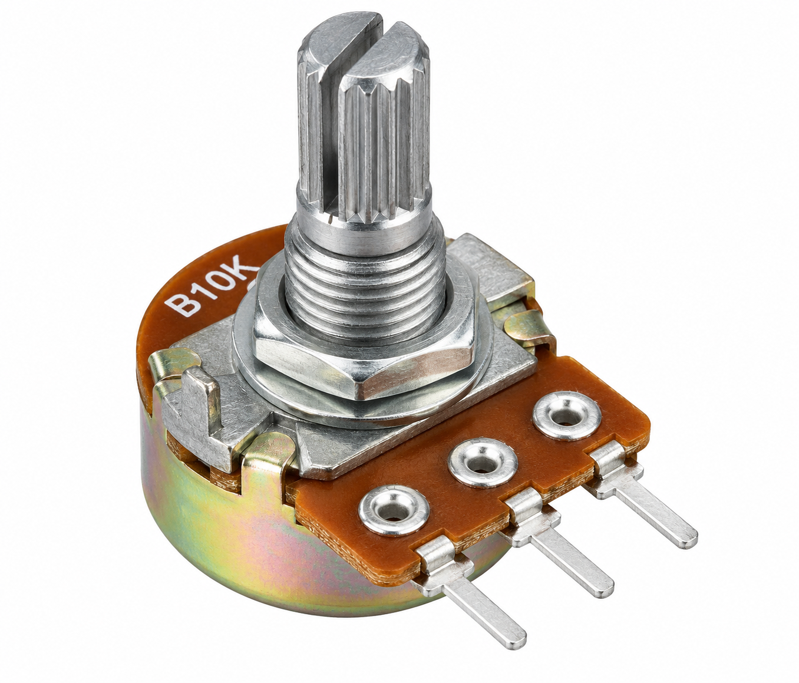

Aim
To control the brightness of an LED using a 10K potentiometer and Arduino UNO.
About the Experiment
Arduino reads the potentiometer value through analog pin A0. The analog value from 0 to 1023 is converted into a PWM brightness value from 0 to 255.
The PWM signal is sent to the LED through D9. Rotating the potentiometer changes the LED brightness from very dim or OFF to maximum brightness.
Components Required

Arduino UNO R3 (×1)
Main controller for reading the potentiometer and controlling LED brightness.

10K Potentiometer (×1)
Provides the adjustable analog input for brightness control.

LED (×1)
Changes brightness according to the potentiometer position.

220Ω Resistor (×1)
Limits current through the LED.

Breadboard (×1)
Used for circuit assembly.

Jumper Wires
Used for electrical connections.
Circuit Connections
| Component | Connection |
|---|---|
| Potentiometer Left Pin | 5V |
| Potentiometer Middle Pin (Wiper) | A0 |
| Potentiometer Right Pin | GND |
| LED Anode (+) | 220Ω Resistor → D9 |
| LED Cathode (−) | GND |
LED PWM Output: D9
Analog Range: 0–1023
PWM Brightness Range: 0–255
Working Principle
↓
Potentiometer value is read through A0
↓
Analog value ranges from 0 to 1023
↓
Arduino maps the value to PWM range 0 to 255
↓
PWM signal is sent to LED through D9
↓
Rotating the potentiometer changes LED brightness
Maximum Potentiometer Value: LED at maximum brightness
Serial Monitor: Shows potentiometer and brightness values
Procedure
- Connect the left pin of the potentiometer to Arduino 5V.
- Connect the middle pin of the potentiometer to Arduino A0.
- Connect the right pin of the potentiometer to Arduino GND.
- Connect the LED anode to Arduino D9 through a 220Ω resistor.
- Connect the LED cathode to GND.
- Connect Arduino UNO to the computer using the USB A-B cable.
- Open Arduino IDE.
- Enter the program given below.
- Select Arduino UNO and the correct COM port.
- Verify and upload the program.
- Open Serial Monitor at 9600 baud.
- Rotate the potentiometer and observe the LED brightness.
Arduino Code
#define POT_PIN A0
#define LED_PIN 9
void setup()
{
pinMode(LED_PIN, OUTPUT);
Serial.begin(9600);
}
void loop()
{
int potValue = analogRead(POT_PIN);
int brightness = map(potValue, 0, 1023, 0, 255);
analogWrite(LED_PIN, brightness);
Serial.print("Potentiometer: ");
Serial.print(potValue);
Serial.print(" Brightness: ");
Serial.println(brightness);
delay(20);
}Expected Output
Rotating the potentiometer changes the brightness of the LED. The potentiometer value and calculated brightness value are displayed on the Serial Monitor.
Potentiometer Maximum: LED at maximum brightness
Serial Monitor: Potentiometer value and brightness value
Result
The Adjustable LED Dimmer experiment was implemented using Arduino UNO, a 10K potentiometer, an LED and a 220Ω resistor. The LED brightness changes according to the potentiometer position.
What You Learn
- How to read an analog potentiometer using Arduino A0.
- How analog values range from 0 to 1023.
- How to map an analog value to a PWM range of 0 to 255.
- How to control LED brightness using analogWrite().
- How to use a 220Ω resistor with an LED.
- How to view potentiometer and brightness values in the Serial Monitor.